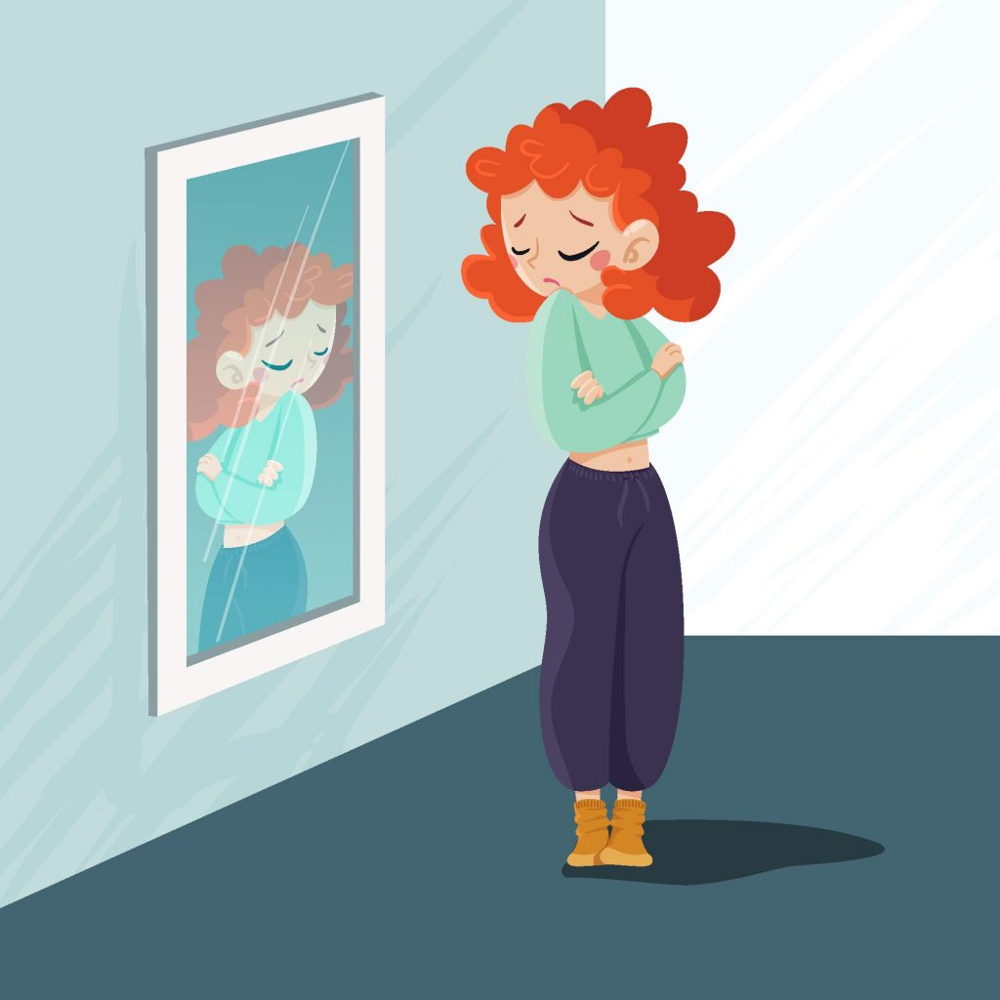
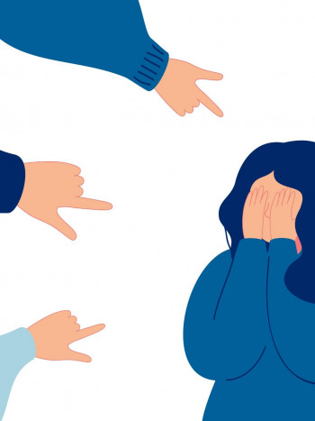
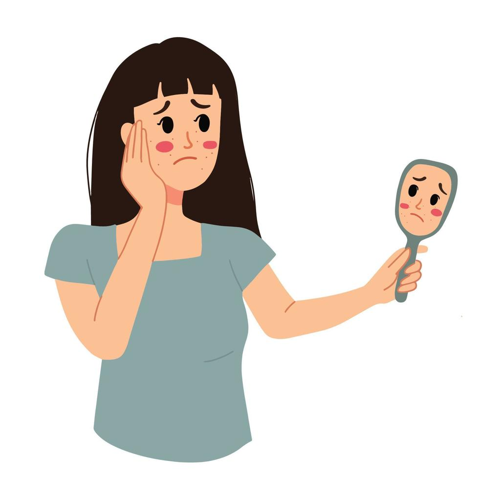

¿Cómo saber si tienes baja autoestima?
El tener una baja autoestima es sinónimo de padecer una distorsión del pensamiento. Esto quiere decir, tener pensamientos incorrectos sobre la propia persona. Si no se solventa, con el paso del tiempo y si no se acude al especialista, irá provocando sentimientos negativos tales como la tristeza, la timidez, la depresión, falta de relación social, entre otras reacciones.


